Úvodní přednáška ANI-VGA · 01
Jan Matoušek · 24. 9. 2026
Původní snímek · 1 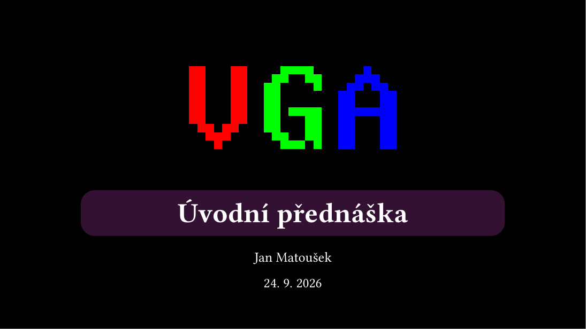
Jan Matoušek · 24. 9. 2026 · PDF, strana 1
Předmět VGA Původní snímek · 2 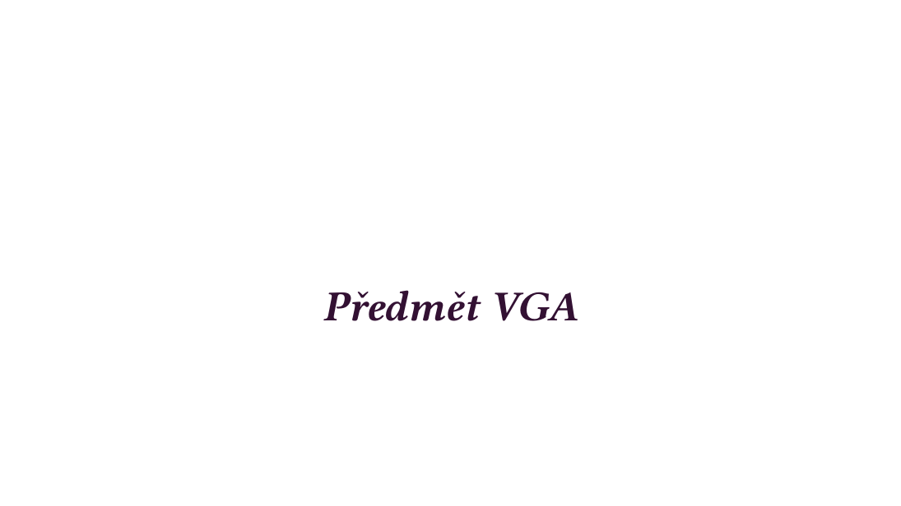
Jan Matoušek · 24. 9. 2026 · PDF, strana 2
Význam zkratky VGA Video Graphics Array standard pro grafické adaptéry vyvinutý společností IBM v roce 1987. Video games architecture předmět pro studenty FITu vyvinutý Janem Matouškem v roce 2025. Původní snímek · 3 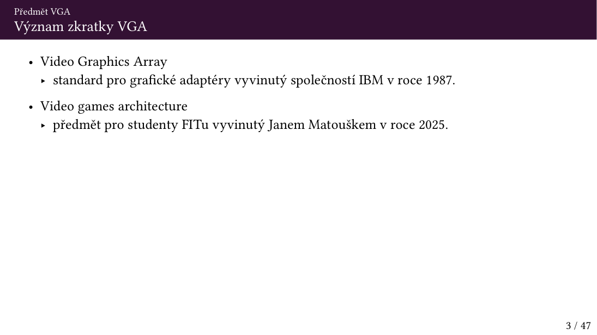
Jan Matoušek · 24. 9. 2026 · PDF, strana 3
O čem předmět není? O tom, jak tvořit hru v konkrétním enginu. ANI-EGG O velkých týmových projektech. ANI-TPa / ANI-TPb O herním designu. ANI-DVD O tvorbě AAAAA her se superrealistickým ray tracingem pro 16K displeje s 500 FPS. ANI náhodou O tom, jak napsat Hello world. BI-PA1 Původní snímek · 4 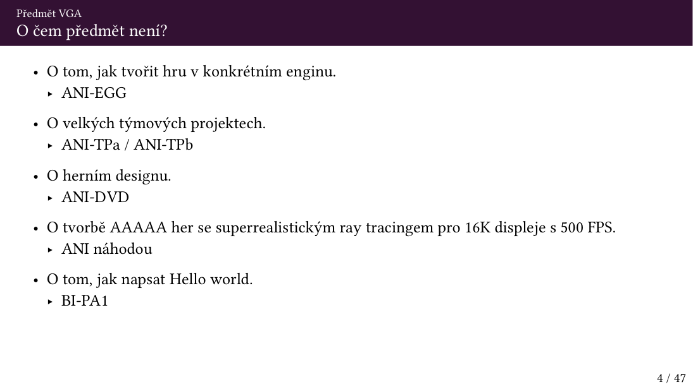
Jan Matoušek · 24. 9. 2026 · PDF, strana 4
O čem předmět je? O tvorbě her bez enginu. O tom, jak fungují různé herní enginy. O tom, jak si napsat vlastní engine. O různých technikách, které se ve hrách používají. Původní snímek · 5 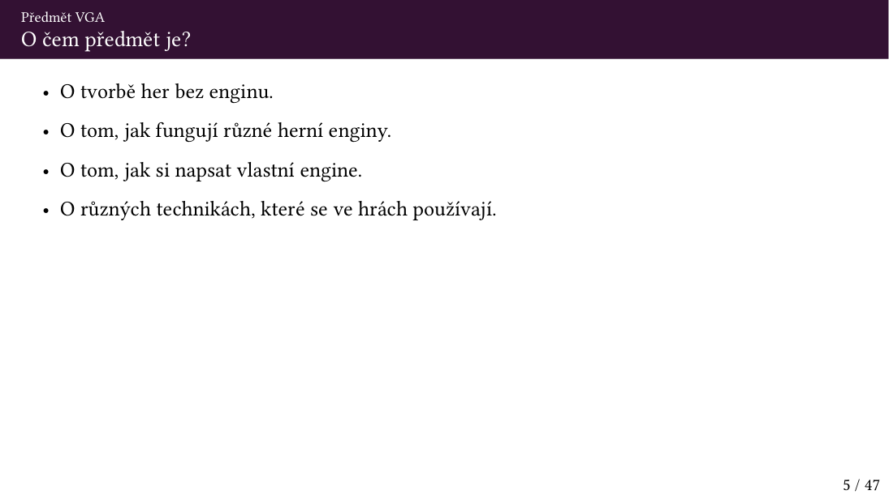
Jan Matoušek · 24. 9. 2026 · PDF, strana 5
Pravidla předmětu Organizační informace z podkladu 24. 9. 2026. Při změně jsou závazné aktuální pokyny na Courses.
Na zápočet nutná průběžná aktivita Do konce 4. týdne si zvolíte téma miničlánku Do konce 8. týdne zvolený miničlánek sepíšete Do konce 8. týdne dohodnete téma semestrálního projektu Na konci semestru odprezentujete hrubý prototyp projektu Na zkoušce Teoretický písemný test na orientaci v odpřednášené látce Obhajoba semestrálního projektu Volitelná ústní zkouška z témat ve vašem semestrálním projektu Původní snímek · 6 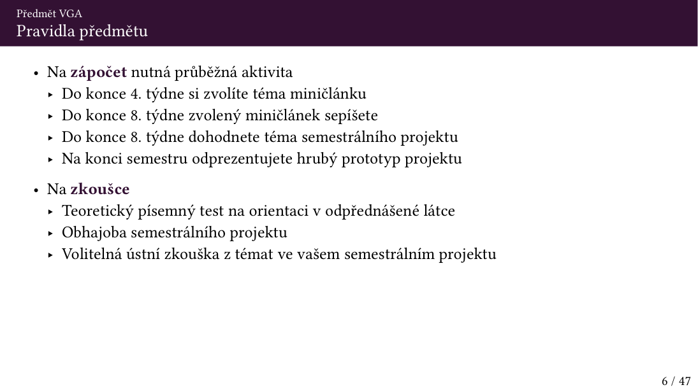
Jan Matoušek · 24. 9. 2026 · PDF, strana 6
Miničlánek (rozbor enginu / herní techniky) Organizační informace z podkladu 24. 9. 2026. Při změně jsou závazné aktuální pokyny na Courses.
Témata vypsána na courses nejpozději koncem září (půjde e-mail). Příležitost prozkoumat nějakou konkrétní hru nebo engine, načerpat inspiraci pro semestrální projekt. Každé téma si mohou vybrat nejvýše tři lidé (ale každý řeší sám). Rozsah: 2 až 5 stran. Struktura: Rozbor tématu, popis řešení, zdroje. Obrázky vítány. Po odevzdání oponentura, doladění, finální odevzdání, body. Z miničlánků vznikne minisborník. Původní snímek · 7 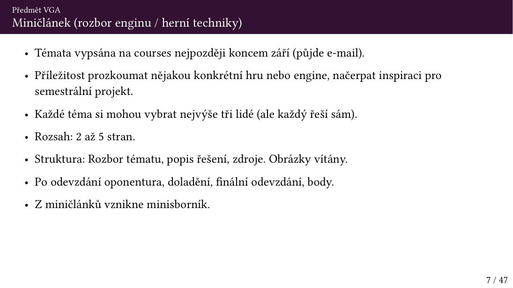
Jan Matoušek · 24. 9. 2026 · PDF, strana 7
Semestrální projekt Organizační informace z podkladu 24. 9. 2026. Při změně jsou závazné aktuální pokyny na Courses.
Jednotlivci nebo dvojice. Zhruba 60 až 75 hodin práce na studenta. Složíte si zadání z kartiček. Příležitost vyzkoušet si věci, které jste zatím nedělali. Cesta je cíl. Čísla na kartičkách naznačují odhad pracnosti bez knihoven. Původní snímek · 8 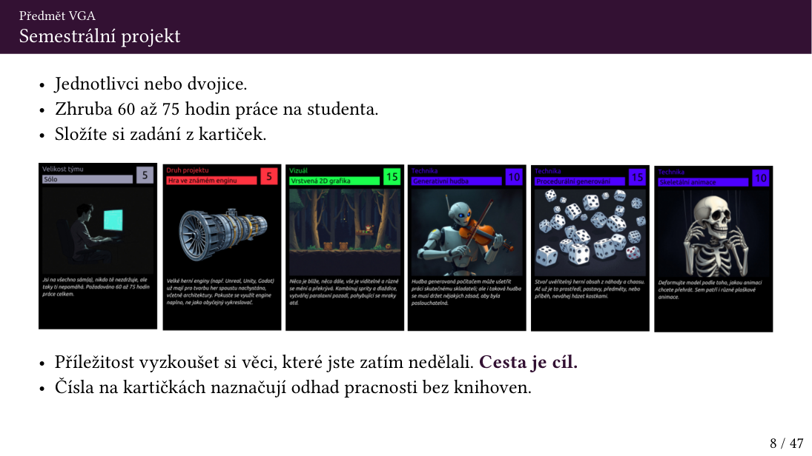
Jan Matoušek · 24. 9. 2026 · PDF, strana 8
Semestrální projekt Organizační informace z podkladu 24. 9. 2026. Při změně jsou závazné aktuální pokyny na Courses.
Odevzdáváte zadání (např. stručný game design document) Odevzdáváte report Odevzdáváte zdrojový kód Publikujete na itch.io (volitelné) Obhajujete u zkoušky Prezentujete na Grafit GEXPO (volitelné) Původní snímek · 9 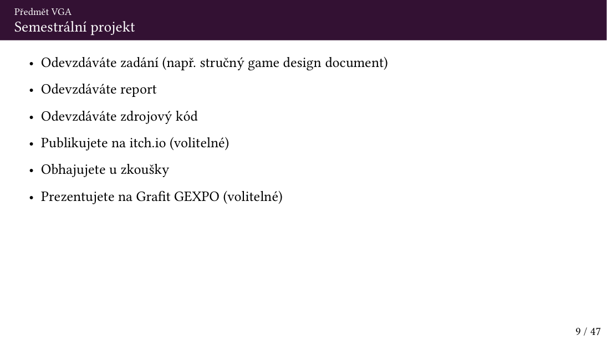
Jan Matoušek · 24. 9. 2026 · PDF, strana 9
AI asistence v semestrálním projektu Organizační informace z podkladu 24. 9. 2026. Při změně jsou závazné aktuální pokyny na Courses.
Použití AI v semestrálním projektu je dobrovolné Případné použití AI musí být přiznáno v reportu V reportu uvedete, jak jste AI použili, typické prompty Ručíte za kód svého projektu AI neslouží k úspoře času, ale k jeho lepšímu využití Nenechte si AI sebrat zábavu Původní snímek · 10 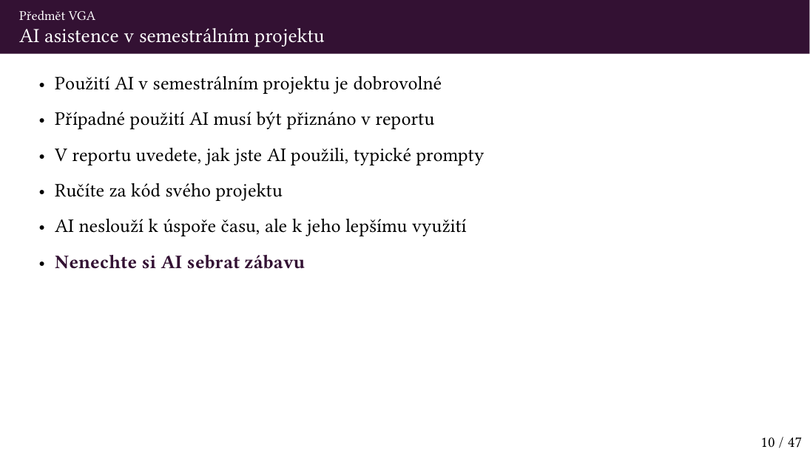
Jan Matoušek · 24. 9. 2026 · PDF, strana 10
Organizace výuky Organizační informace z podkladu 24. 9. 2026. Při změně jsou závazné aktuální pokyny na Courses.
Přednášky – každý týden Cvičení – ob týden První cvičení bude vaše aktivita. Později proseminářová forma – budeme společně psát hru. Na konci semestru budete prezentovat svoje rozpracované hry. Otázky k diskuzi Diskutovat rozpracované semestrální práce průběžněji? Zapojit miničlánky přímo do přednášek? Mít náplň proseminářů jinou každý týden? (Záznamy budou.) Původní snímek · 11 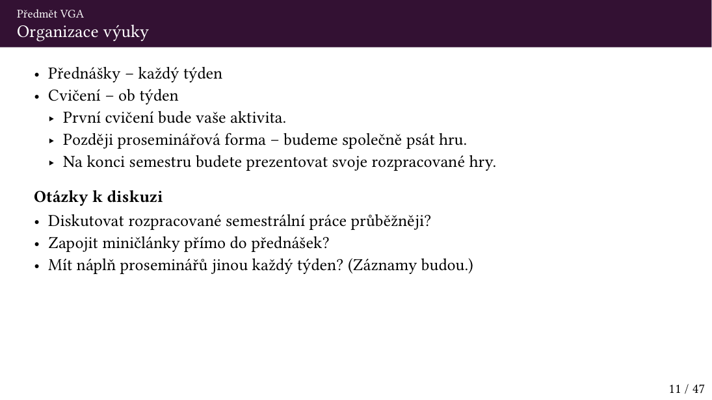
Jan Matoušek · 24. 9. 2026 · PDF, strana 11
Materiály a odkazy Organizační informace z podkladu 24. 9. 2026. Při změně jsou závazné aktuální pokyny na Courses.
Courses: https://courses.fit.cvut.cz/NI-VGA Discord VGA: https://discord.gg/6gn5GyXh Discord Grafit: https://discord.gg/MbcSf3Ca Dotazy k organizaci a k projektům? Původní snímek · 12 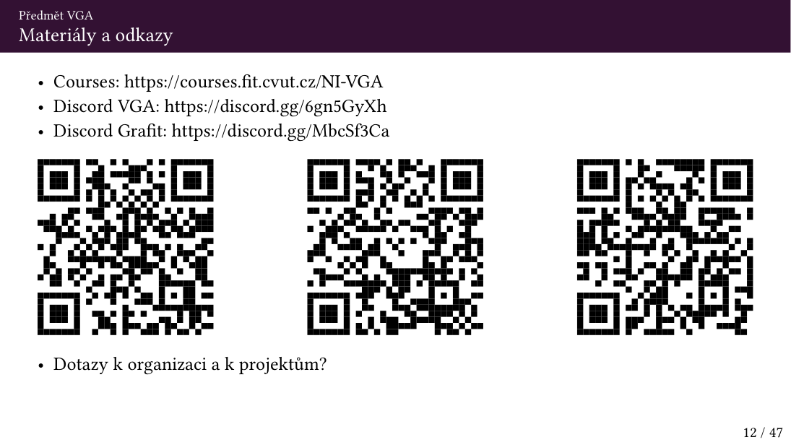
Jan Matoušek · 24. 9. 2026 · PDF, strana 12
Hry Původní snímek · 13 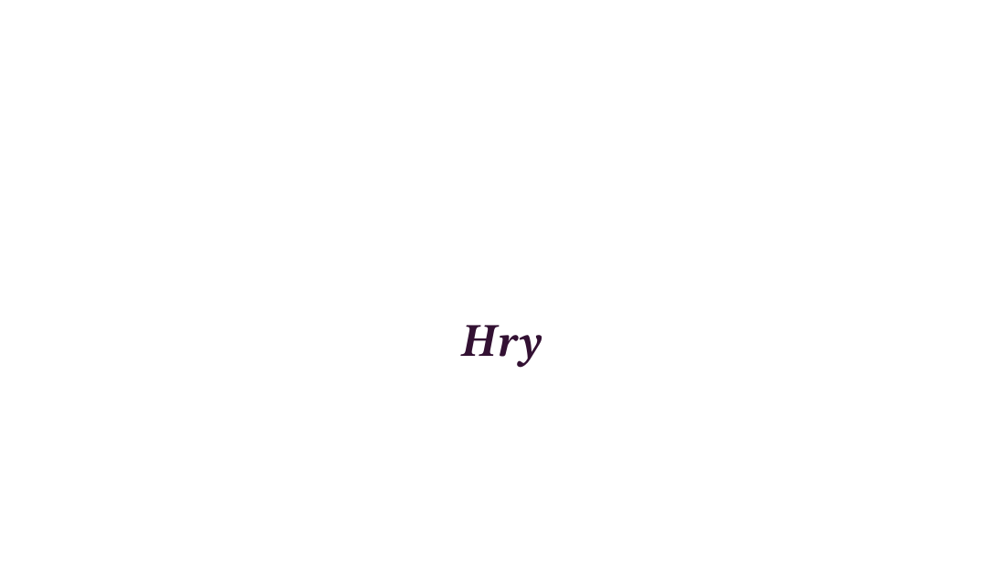
Jan Matoušek · 24. 9. 2026 · PDF, strana 13
Co je hra? Původní snímek · 14 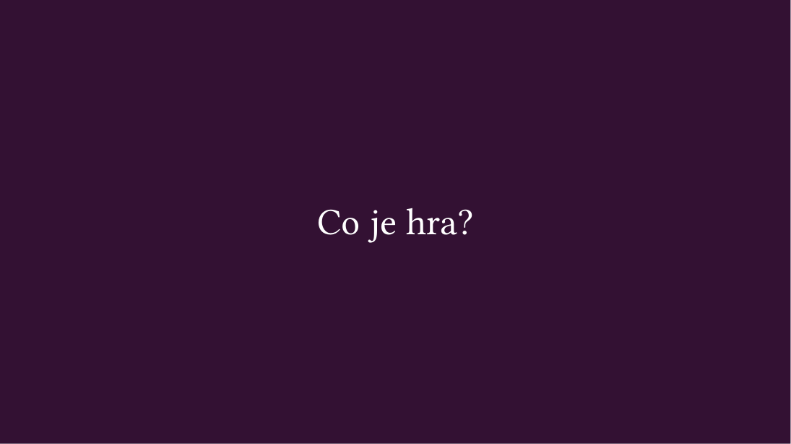
Jan Matoušek · 24. 9. 2026 · PDF, strana 14
Co říkají slovníky? Game is… … a physical or mental competition conducted according to rules with the participants in direct opposition to each other. – Merriam-Webster, heslo game … activity engaged in for diversion or amusement. – tamtéž, synonymum play … an entertaining activity or sport, especially one played by children, or the equipment needed for such an activity. – Cambridge, heslo game … something that is not treated seriously. – tamtéž Původní snímek · 15 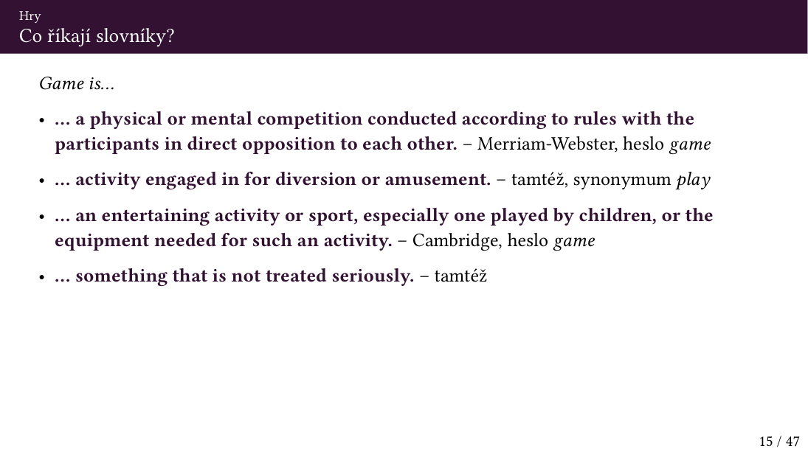
Jan Matoušek · 24. 9. 2026 · PDF, strana 15
Co říkají chytré hlavy? A game is the voluntary attempt to overcome unnecessary obstacles. – Bernard Suits, The Grasshopper To play a game is to attempt to achieve a specific state of affairs, using only means permitted by rules, where the rules prohibit use of more efficient in favor of less efficient means, and where the rules are accepted just because they make possible such activity. – tamtéž A game is a series of interesting choices. – Sid Meier A problem-solving activity, approached with a playful attitude. – Jesse Schell A game is an activity among two or more independent decision-makers seeking to achieve their objectives in some limiting context. – Clark C. Abt, Serious Games Původní snímek · 16 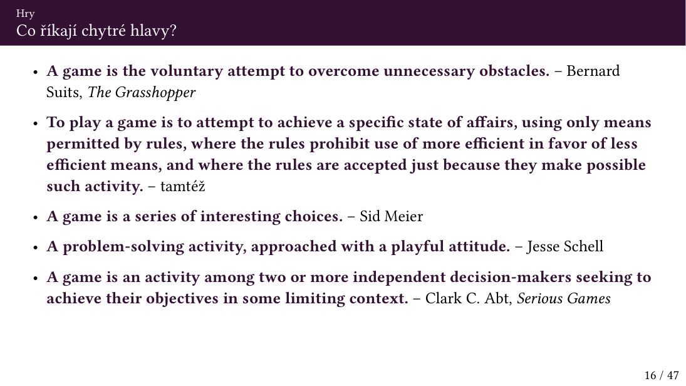
Jan Matoušek · 24. 9. 2026 · PDF, strana 16
Co říkají chytré hlavy? A game is an activity defined by rules in which players try to reach some sort of goal. – Alexander Galloway When you strip away the genre differences and the technological complexities, all games share four defining traits: a goal, rules, a feedback system, and voluntary participation. – Jane McGonigal, Reality is Broken Původní snímek · 17 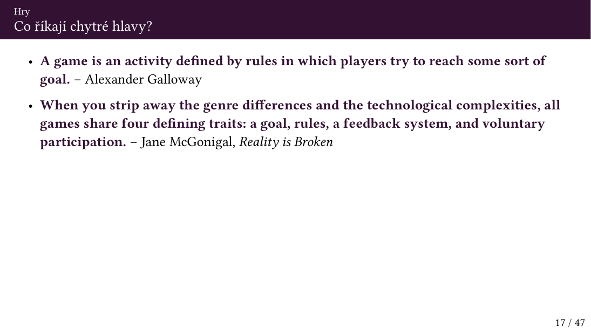
Jan Matoušek · 24. 9. 2026 · PDF, strana 17
Co je počítačová hra? Původní snímek · 18 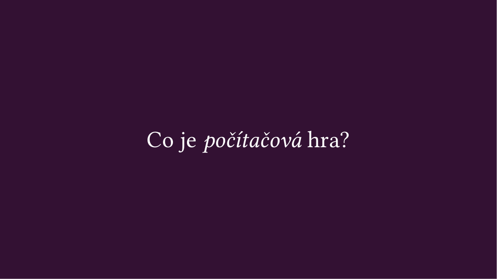
Jan Matoušek · 24. 9. 2026 · PDF, strana 18
Počítačové hry Video game is… an electronic game in which players control images on a video screen. – Merriam Webster, heslo video game a game in which the player controls moving pictures on a screen by pushing buttons – Cambridge English Dictionary a game which we play thanks to an audiovisual apparatus and which can be based on a story. – Nicolas Esposito, A short and simple definition of what a video game is an umbrella term encompassing all types of entertainment software presented through gaming consoles or devices – S. Egenfeldt-Nielsen, J. H. Smith, S. Pajares Tosca, Understanding Video Games Původní snímek · 19 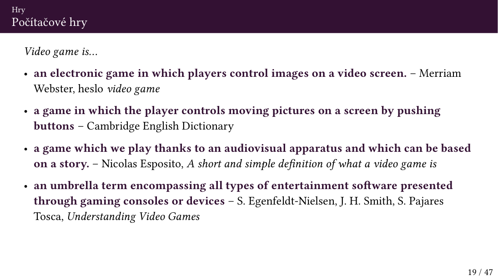
Jan Matoušek · 24. 9. 2026 · PDF, strana 19
Počítačové hry jako komplexní problém Počítačovou hru je potřeba: Vytvořit – týmová spolupráce Navrhnout jako hru – herní design Přizpůsobit publiku – průzkum trhu Dostat k publiku – propagace Naplnit audiovizuálem – asset creation Naprogramovat – herní architektura Testovat Zaplatit vývoj Vydat a prodat … Původní snímek · 20 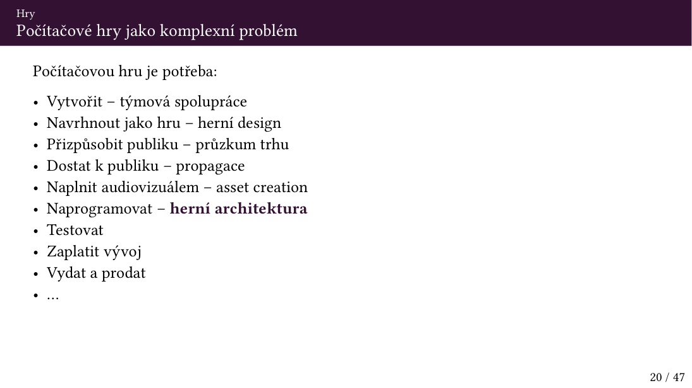
Jan Matoušek · 24. 9. 2026 · PDF, strana 20
Herní design (z rychlíku) Původní snímek · 21 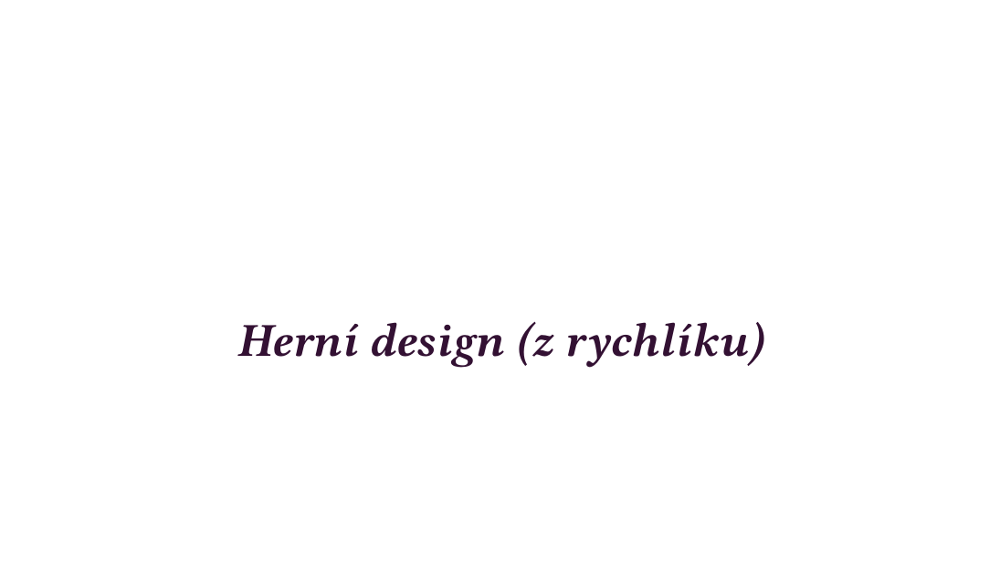
Jan Matoušek · 24. 9. 2026 · PDF, strana 21
Elementy herního designu Entity – „hmatatelné“ části hry (žetony, kostky, pole herního plánu…); to, co má vlastnosti Mechaniky – akce s entitami Pravidla – vazby mezi akcemi, omezení akcí Systémy – soubory mechanik a pravidel Cíle – směřují úsilí hráče Progrese – postupný průběh hry, proměny možností Zábava Příběh Žánr Hráči Původní snímek · 22 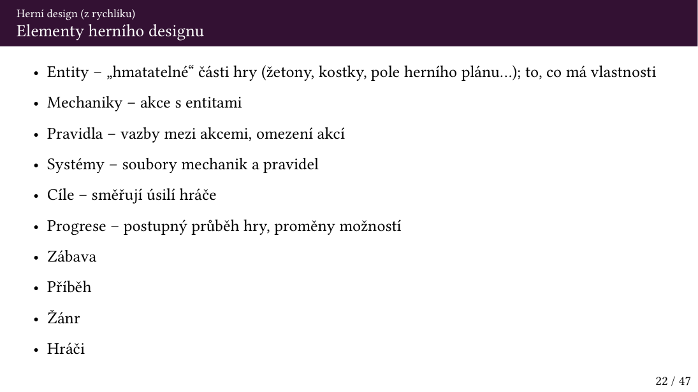
Jan Matoušek · 24. 9. 2026 · PDF, strana 22
Emergence Z jedoduchých pravidel mohou vzniknout i velice komplexní systémy a hry Příklad: šachy Původní snímek · 23 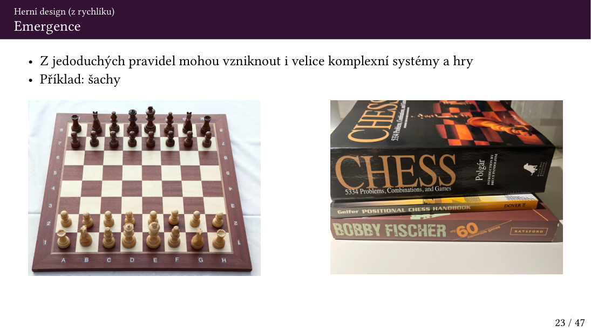
Jan Matoušek · 24. 9. 2026 · PDF, strana 23
Herní smyčka / Game loop Jednotlivé aktivity ve hrách se opakují. Hry obsahují více úrovní herních smyček. Příklad: Pong Technická smyčka: zpracování vstupu, pohyb pálek a míčku, vykreslení scény. Výměna: letící míček se pravidelně odráží od pálek. Game: když míček není odražen pálkou, začne nový game. Match: po 11 dosažených bodech zápas končí a může začít nový. Složitější hry mají velké množství herních smyček a přechodů mezi nimi. Interaktivní ukázka GRAFIT Původní snímek · 24 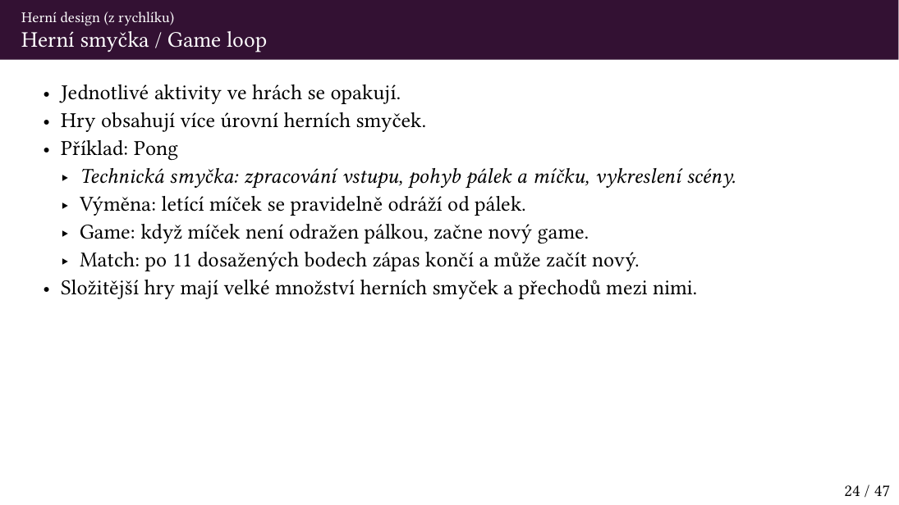
Jan Matoušek · 24. 9. 2026 · PDF, strana 24
Zábava Fun is what provides amusement or enjoyment. – Merriam-Webster Fourteen forms of fun – Pierre-Alexandre Garneau Beauty Immersion Intellectual Problem Solving Competition Social Interaction Comedy Thrill of Danger Physical Activity Love Creation Power Discovery Advancement and Completion Application of an Ability Losing is fun. – Dwarf Fortress community Původní snímek · 25 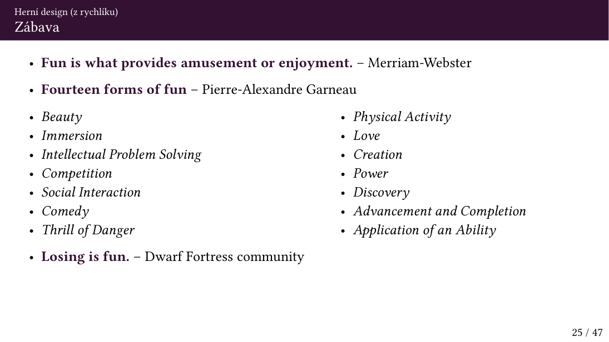
Jan Matoušek · 24. 9. 2026 · PDF, strana 25
Příběh Vytváří prostředí pro hru. Umožňuje přirozenou tvorbu mechanik a pravidel. Dává význam cíli hry, poskytuje hráči motivaci. Může být vytvořen autory hry, nebo může být vytvořen hráčem hraním hry. Prvky příběhu: protagonista, antagoista, zápletka, překážka, zvrat, rozuzlení… Více v předmětu BI-VHS – Virtuální herní světy. Původní snímek · 26 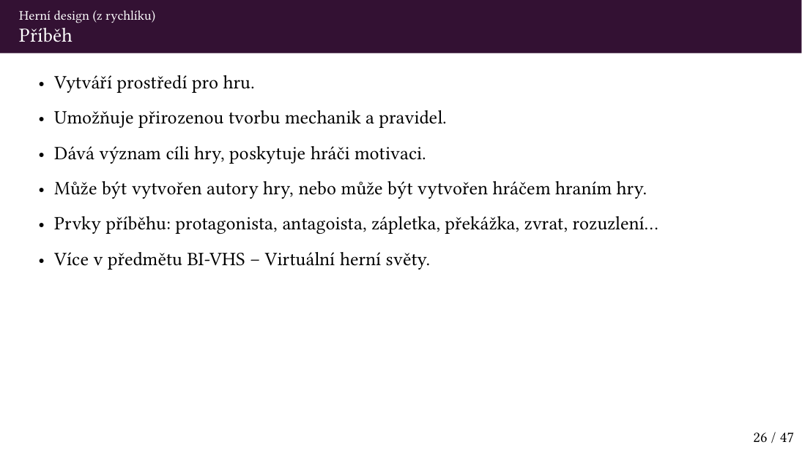
Jan Matoušek · 24. 9. 2026 · PDF, strana 26
Žánr Soubor obvyklých mechanik, pravidel a systémů. Zařazení hry k žánru vytváří u hráčů určitá očekávání. Původní snímek · 27 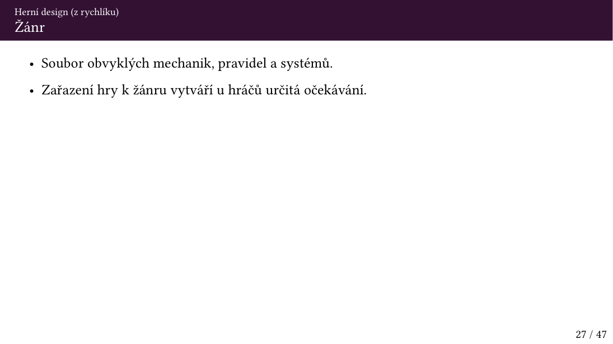
Jan Matoušek · 24. 9. 2026 · PDF, strana 27
Poznáte žánr? Původní snímek · 28 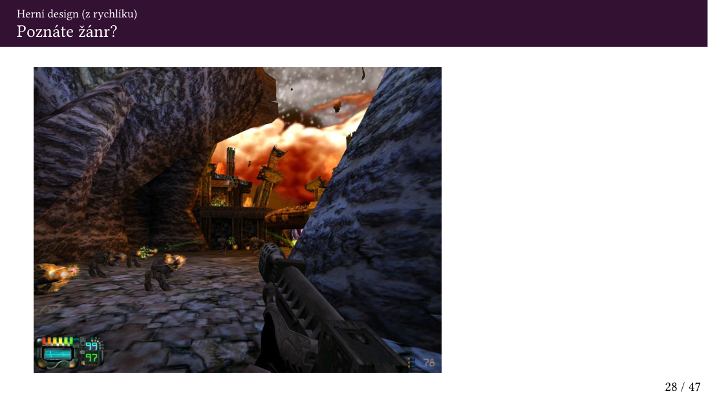
Jan Matoušek · 24. 9. 2026 · PDF, strana 28
Poznáte žánr? Původní snímek · 29 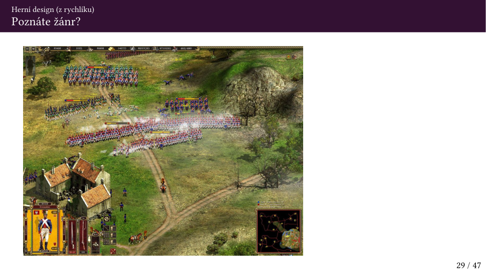
Jan Matoušek · 24. 9. 2026 · PDF, strana 29
Poznáte žánr? Původní snímek · 30 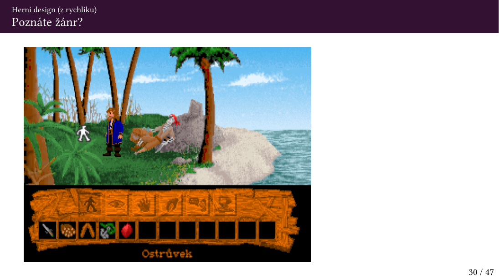
Jan Matoušek · 24. 9. 2026 · PDF, strana 30
Poznáte žánr? Původní snímek · 31 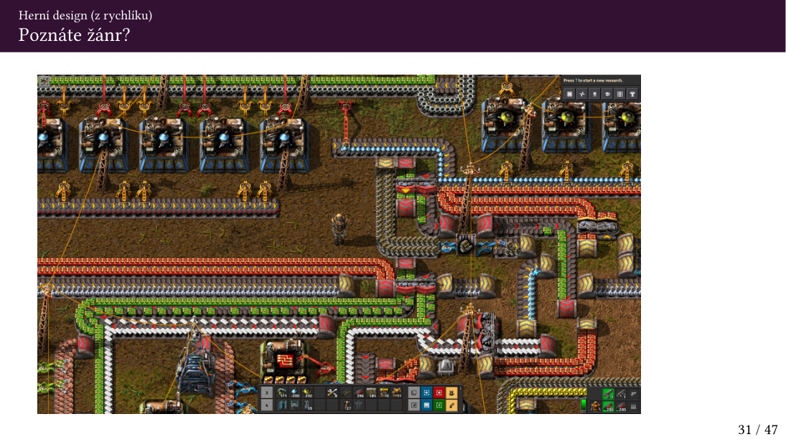
Jan Matoušek · 24. 9. 2026 · PDF, strana 31
Poznáte žánr? Původní snímek · 32 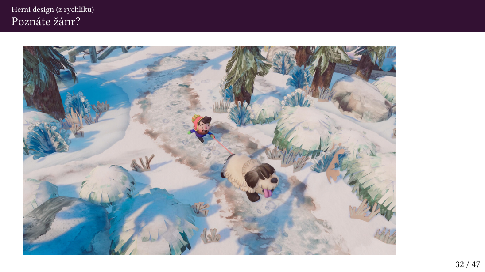
Jan Matoušek · 24. 9. 2026 · PDF, strana 32
Žánr Soubor obvyklých mechanik, pravidel a systémů. Zařazení hry k žánru vytváří u hráčů určitá očekávání. Příklady: adventura, skákačka (platformer), střílečka (shooter), závodní hra, simulátor, strategie, RPG, puzzle… Existuje velké množství žánrů (a jejich seznam není neměnný). Existuje velké množství podžánrů. Žánry lze kombinovat. Původní snímek · 33 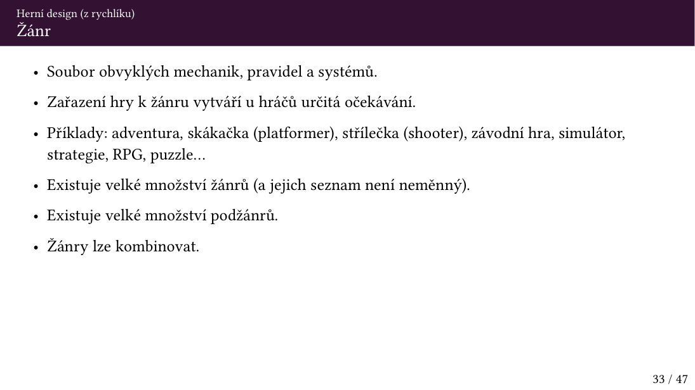
Jan Matoušek · 24. 9. 2026 · PDF, strana 33
Hráči Jsou různí (povaha, životní zkušenosti, preference, zázemí, kultura…). Žádná hra nesedne všem. Každá hra přitahuje určité druhy hráčů. Bartle taxonomy of player types – Richard Bartle (1996) Achievers Explorers Socializers Killers Původní snímek · 34 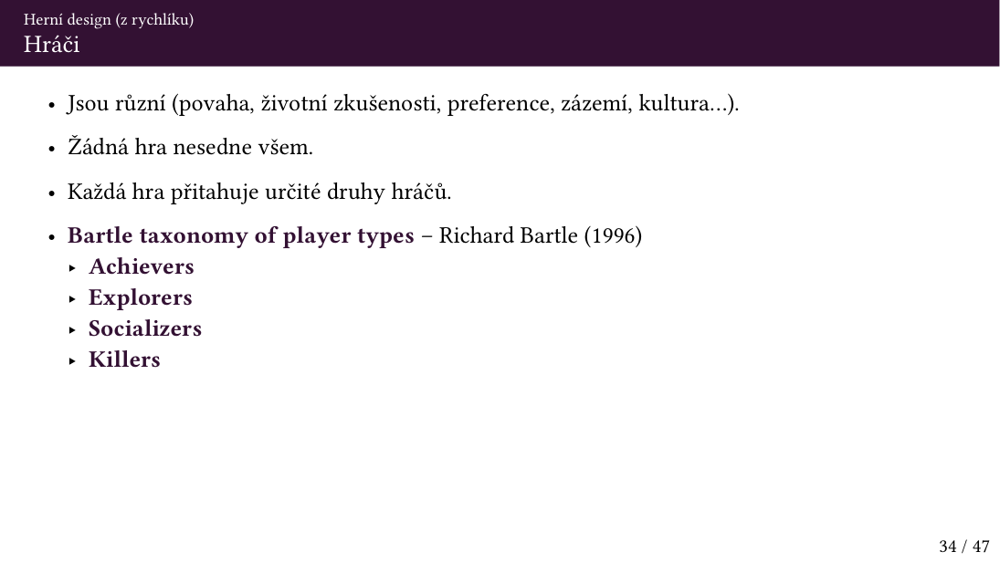
Jan Matoušek · 24. 9. 2026 · PDF, strana 34
Proč je herní design důležitý Vymyslet hru spontánně je možné. U jednoduchých her to jinak nejde. U složitějších her to tak nejde. Hra bez dobrého designu je špatná hra. (Opačně to neplatí.) Vývoj her je náročný proces, spotřebovává finanční, lidské i časové zdroje. Nechceme vytvářet špatně navrženou hru. Při vývoji hry musí všichni zúčastnění vědět, jaká se tvoří hra. Původní snímek · 35 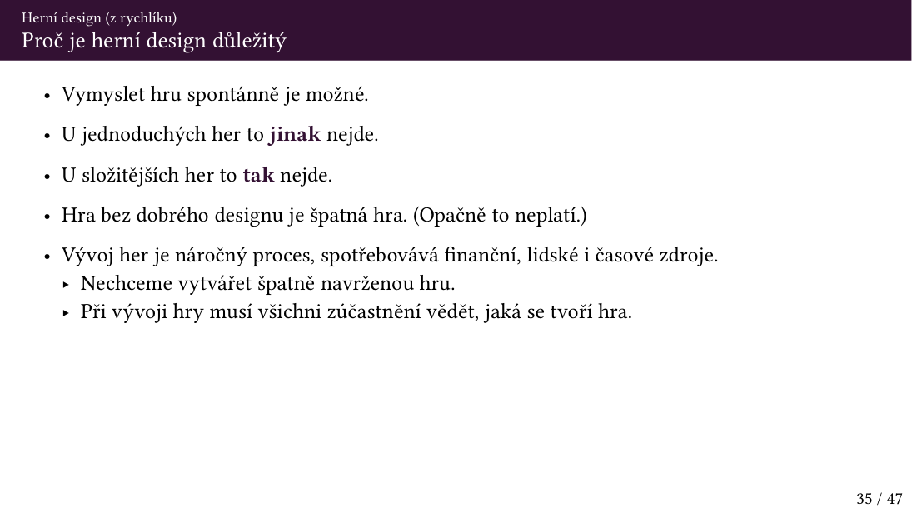
Jan Matoušek · 24. 9. 2026 · PDF, strana 35
Design v kontextu vývoje hry Herní design není dokument, ale proces. Herní design se vyvíjí spolu s hrou, mění se a zpřesňuje. Počáteční pitch je důležitý pro investory. Zde ještě nechceme strávit designem příliš času. Prototypy jsou důležité k ověření myšlenek. Zde chceme selhat co nejrychleji. Původní snímek · 36 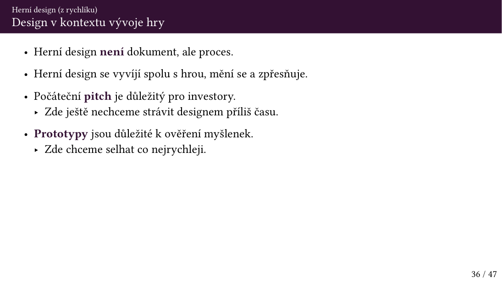
Jan Matoušek · 24. 9. 2026 · PDF, strana 36
Příklad z léta 2025 Myšlenka: Spojit tower defense a pinball. + Původní snímek · 37 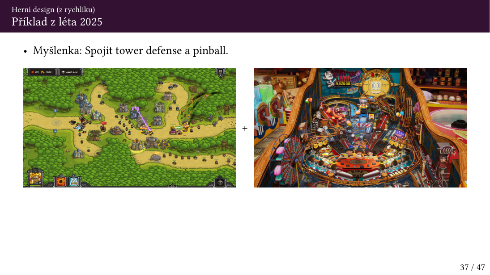
Jan Matoušek · 24. 9. 2026 · PDF, strana 37
Příklad z léta 2025 Myšlenka: Spojit tower defense a pinball. Před větší investicí do designu jsem udělal jednoduchý prototyp. Scéna: Otočná deska, kulička, dvě klapky, zjednodušený kolizní model hrací skříně. Celková pracnost: 6 hodin, z toho nejvíce času Blender a přemlouvání fyzikálního enginu. Původní snímek · 38 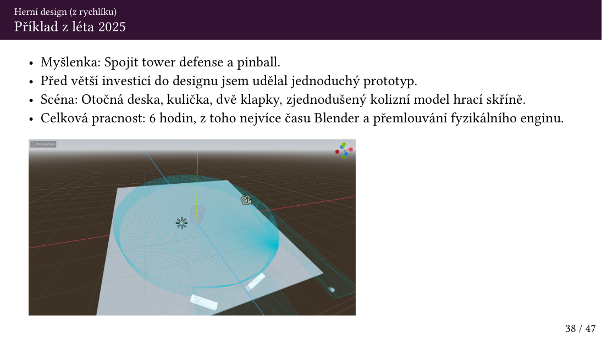
Jan Matoušek · 24. 9. 2026 · PDF, strana 38
Příklad z léta 2025 Myšlenka: Spojit tower defense a pinball. Před větší investicí do designu jsem udělal jednoduchý prototyp. Scéna: Otočná deska, kulička, dvě klapky, zjednodušený kolizní model hrací skříně. Celková pracnost: 6 hodin, z toho nejvíce času Blender a přemlouvání fyzikálního enginu. Výsledek: Odrážení kuličky bylo příliš náhodné, nešlo rozumně mířit, celkový dojem byl velmi pomalý. Myšlenku jsem zavrhnul. Naučil jsem se udělat jednoduché kolizní modely v Blenderu. Dostal jsem jiné nápady. Původní snímek · 39 Jan Matoušek · 24. 9. 2026 · PDF, strana 39
Design v kontextu vývoje hry Herní design není dokument, ale proces. Herní design se vyvíjí spolu s hrou, mění se a zpřesňuje. Počáteční pitch je důležitý pro investory. Zde nechceme strávit příliš času detaily designu. Prototypy jsou důležité k ověření myšlenek. Zde chceme selhat co nejrychleji. Design je zpřesňován a vyvíjejí se pokročilejší prototypy. Zde se může stát ledacos… Původní snímek · 40 Jan Matoušek · 24. 9. 2026 · PDF, strana 40
Příklad překvapení: Minecraft Myšlenka: Přidat do hry zvíře, konkrétně prase, včetně modelu a animací. Překvapení: Tělo prasete chodilo otočené na výšku, což vypadalo děsivě. Výsledek: Ze zabugovaného zvířete byl vytvořen nový tvor – creeper. Creeper se stal ikonickou postavou hry. Ilustrace z původního podkladu, strana 41, obrázek 1
Původní snímek · 41 Jan Matoušek · 24. 9. 2026 · PDF, strana 41
Příklad překvapení: Bloodthief (autor: Blargis) Myšlenka: Hotline Miami + Quake. Šíleně rychlý pohyb. Překvapení: Testeři našli několik chyb v testovacích levelech, využili pohybových mechanik a dohráli levely mnohem dříve. Začali mezi sebou porovnávat časy. Výsledek: Přepracovaný koncept hry. Větší zaměření na speedrunning. Speedrunning podpořen několika mechanikami. Bloodthief je ve speedrunning komunitě velmi oblíbenou hrou. Ilustrace z původního podkladu, strana 42, obrázek 1
Původní snímek · 42 Jan Matoušek · 24. 9. 2026 · PDF, strana 42
Design v kontextu vývoje hry Herní design není dokument, ale proces. Herní design se vyvíjí spolu s hrou, mění se a zpřesňuje. Počáteční pitch je důležitý pro investory. Zde nechceme strávit příliš času detaily designu. Prototypy jsou důležité k ověření myšlenek. Zde chceme selhat co nejrychleji. Design je zpřesňován a vyvíjejí se pokročilejší prototypy. Zde se může stát ledacos… Ucelenější prototyp (vertikální řez) už vyžaduje navržené detaily hry, ale ještě není implementován všechen herní obsah. Příklad: kompletní jedna frakce ve strategii, kompletní jedna mise ve střílečce atd. Původní snímek · 43 Jan Matoušek · 24. 9. 2026 · PDF, strana 43
Game design document (GDD) Popisuje návrh hry. Pohlíží na hru z několika úhlů pohledu. Lze dohledat velké množství příkladů. Neexistuje žádný jediný správný postup. Neexistuje jediná správná forma. Existuje spousta good practices. Existuje spousta bad practices. Původní snímek · 44 Jan Matoušek · 24. 9. 2026 · PDF, strana 44
Typický obsah GDD Pracovní název. Stručný popis hry, žánr. Pilíře návrhu. Inspirace návrhu. Cílová skupina, trh a obchodní model. Základní herní mechaniky a pravidla. Základní popis ovládání, vizuálu a zvuků. Rozpracované detaily podle potřeby. Původní snímek · 45 Jan Matoušek · 24. 9. 2026 · PDF, strana 45
Proč dělat hry? Původní snímek · 46 Jan Matoušek · 24. 9. 2026 · PDF, strana 46
Proč dělat hry Dobrý pocit z tvorby něčeho zábavného. Objevování možností v herním designu. Zkoušení různých technik. Osvojování tvůrčích dovedností. Učení se procesu tvorby komplexního projektu (nejen) po technické stránce. Společenský aspekt, hraní her ostatních, tvorba her s ostatními. Tvorba her je zábava. Původní snímek · 47 Jan Matoušek · 24. 9. 2026 · PDF, strana 47